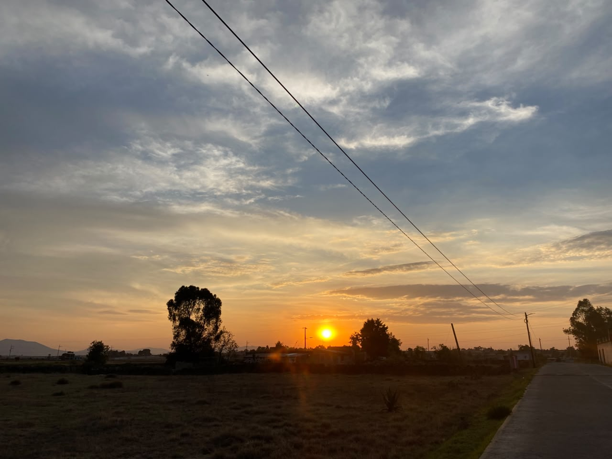
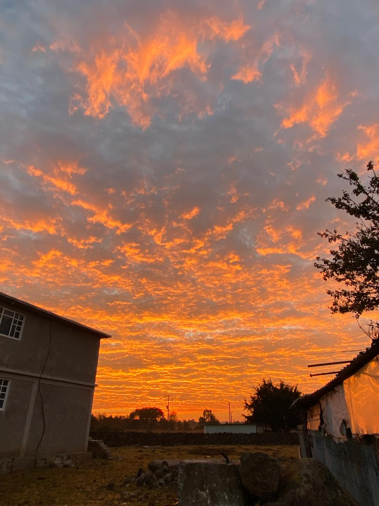
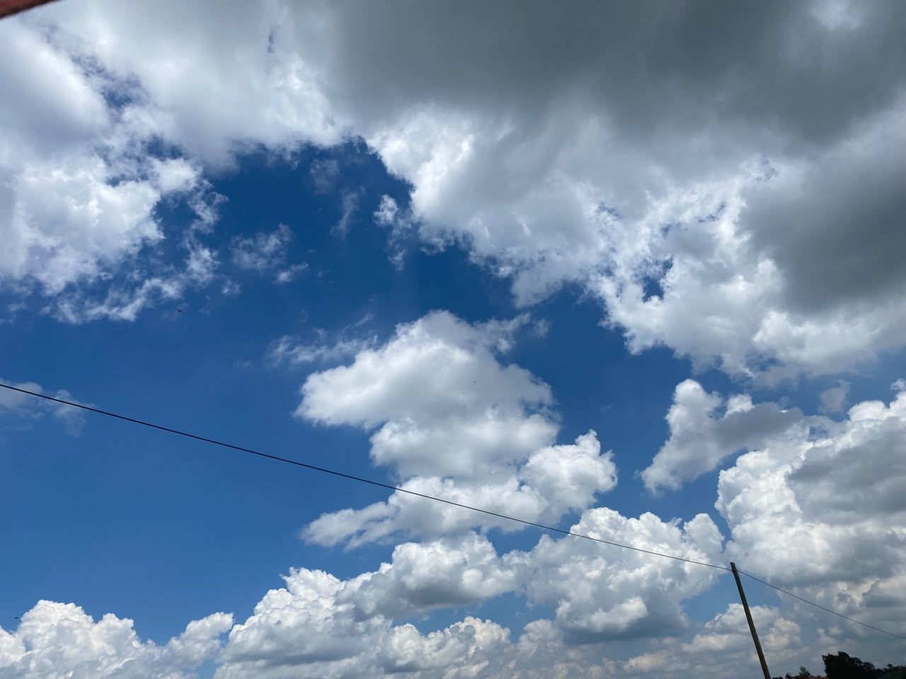
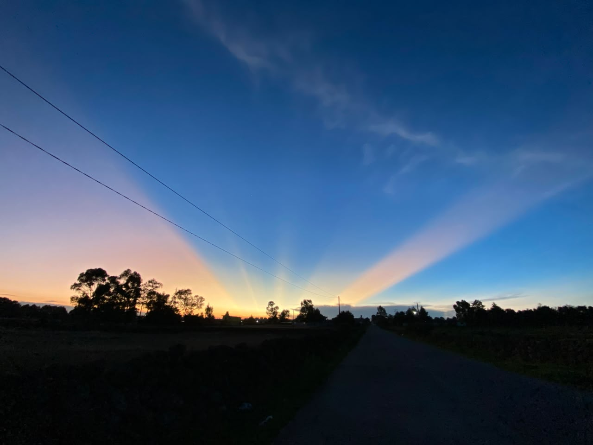

Entre nubes y colores
Para los días en que levantar la vista lo cambia todo.

Tarde dorada
"El cielo se tiñó de naranja y por un momento todo estuvo en calma."

Fuego en el horizonte
"Me recordó que hasta las despedidas pueden ser hermosas."

Susurros de luz
"Las nubes parecían pintadas a mano."

Algodón en el aire
"A veces solo hace falta mirar hacia arriba para sentirse pequeño."

El final del día
"Un recordatorio de que mañana será otro día."